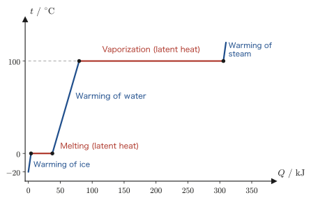
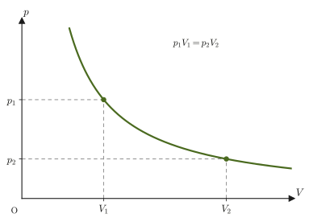
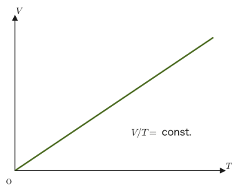
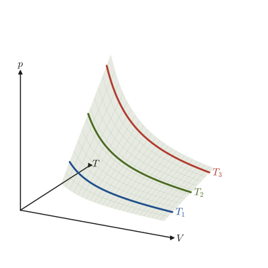
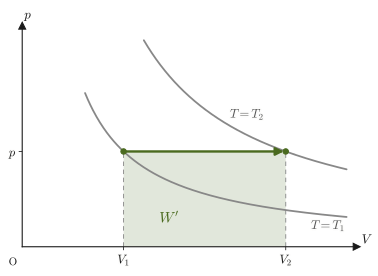
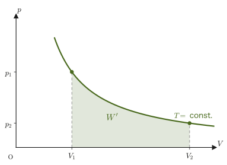
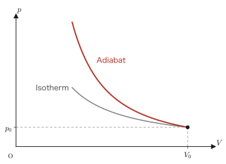
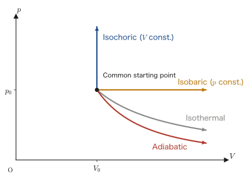
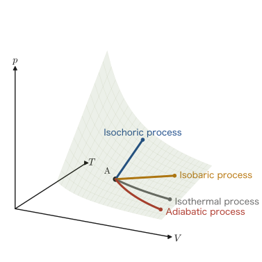

Chapter 23Heat and Temperature — Gas Laws and Changes of State
Put a kettle on the fire and the water becomes hot; put a drink in the refrigerator and it becomes cold. When you compress air vigorously with a bicycle pump, the barrel of the pump becomes slightly warm. Air that has been used to inflate a balloon expands more at warm midday than on a cold morning. Formulating such everyday experiences of “hot and cold” and “swelling and shrinking” as relations among physical quantities that can be handled numerically (temperature, quantity of heat, pressure, volume) is the task of thermodynamics, which begins here. In high school physics you will surely have learned Boyle's law, Charles's law, and the equation of state of a gas, $pV=nRT$, as formulas. In this chapter we check how these formulas follow from the fact that “a fixed amount of gas has a definite relation among pressure, volume, and temperature,” and then we learn the two laws that lie at the very foundation of thermodynamics—the first law of thermodynamics, which extends the law of conservation of energy to include heat, and the second law of thermodynamics, which places a restriction on the direction of change.
In mechanics, motion could be described using only the “visible” quantities of the position, velocity, and acceleration of an object. The gas treated in thermodynamics is made up of an enormous number of molecules, so small as to be invisible (about $6\times10^{23}$ of them in $1\,\mathrm{mol}$). Following the motion of every single molecule is practically impossible, but fortunately the behavior of the gas as a whole can be described quite accurately by just a few macroscopic quantities such as the pressure $p$, the volume $V$, and the temperature $T$. This is the reason the science of thermodynamics is possible. (The standpoint of “deriving” these laws starting from the motion of individual molecules is studied as the kinetic theory of gases in the next chapter.)
This chapter is the first chapter of Part IV, “Thermodynamics.” An overview of Part IV follows. The chapters are arranged so that they can be read in order from the top, and in every chapter we keep using, as they are, the symbols and sign conventions introduced in this chapter (see the Caution below).
- Chapter 23 (this chapter) … temperature, quantity of heat, and internal energy; the first and second laws of thermodynamics; the equation of state of an ideal gas and the four changes of state
- Chapter 24 … the kinetic theory of gases and the van der Waals equation of state (understanding the laws of this chapter from the motion of molecules)
- Chapter 25 … real gases: the principle of corresponding states, the compression factor, and the virial expansion
- Chapter 26 … systems and state quantities; quasi-static processes and work (inexact differentials $\dd'Q$, $\dd'W$ are treated in earnest)
- Chapter 27 … heat capacity, enthalpy, and the Joule–Thomson effect (the exact form of the adiabat)
- Chapter 28 … the Carnot cycle and the efficiency of heat engines (including the equivalence of the two statements of the second law)
- Chapter 29 … entropy: the quantity that expresses the second law quantitatively
- Chapter 30 … free energies: direction of change and maximum work (the Helmholtz free energy $A$ and the Gibbs energy $G$, also called the Gibbs free energy)
- Chapter 31 … thermodynamic relations and the Maxwell relations
- Chapter 32 … the third law of thermodynamics and rules for phase transitions
- Chapter 33 … the heat conduction equation
- Chapter 34 … gateway to statistical thermodynamics: Maxwell's velocity distribution
- Starting from the picture of thermal motion, learn to use the relation between the Celsius temperature and the absolute temperature (kelvin), as well as the definitions of quantity of heat, specific heat, and heat capacity and the conservation of heat
- Understand internal energy and the first law of thermodynamics $\Delta U=Q+W$, together with the sign conventions used throughout this book ($Q$: the heat received by the gas; $W$: the work done on the gas by its surroundings; $W'$: the work done by the gas on its surroundings; $W'=-W$)
- Learn the statements of the second law of thermodynamics (the Clausius statement and the Kelvin–Planck statement) and recognize that it is a law that determines the direction of change
- From Boyle's law and Charles's law, derive the Boyle–Charles law, and then, combining it with Avogadro's law, derive the equation of state of an ideal gas, $pV=nRT$
- For each of the isochoric, isobaric, isothermal, and adiabatic processes, learn to distinguish in a unified way what $Q,W,\Delta U$ become, on the $p$-$V$ diagram (by the slope of the curve)
- Derive the relation $\beta=3\alpha$ between the coefficient of linear expansion $\alpha$ and the coefficient of volume expansion $\beta$ from the first-order approximation of infinitesimal quantities
Source notes: Yasuhide Mochizuki, Physics Notes: Thermodynamics, pp. 1–9.
Caution: Conventions used throughout this part (Part IV Thermodynamics)—$Q$, $W$, $W'$, $\Delta$
The way the sign of the “work” appearing in the first law of thermodynamics is chosen differs from textbook to textbook and from field to field, which is a troublesome complication. In this book we use the following symbols distinctly and keep to this convention in every chapter of Part IV.
- $Q$ … the quantity of heat the gas receives from its surroundings ($Q\gt0$ when heat flows into the gas)
- $W$ … the work done on the gas by its surroundings ($W\gt0$ when the gas is compressed)
- $W'$ … the work done by the gas on its surroundings ($W'\gt0$ when the gas expands)
$W$ and $W'$ differ only in sign; they are related by $W'=-W$. The first law of thermodynamics can be written $\Delta U=Q+W$ if we use $W$, and $\Delta U=Q-W'$ if we use $W'$ (discussed in detail in Section 23.4). If you learned $\Delta U=Q+W$ ($W$: the work done on the gas) in high school physics, you can read it just as it is; if you learned $Q=\Delta U+W'$ ($W'$: the work done by the gas), read it in correspondence with $W'$. Some textbooks, engineering textbooks for example, use the same letter $W$ to mean the work done by the gas and write $\Delta U=Q-W$, so when you read another book, it is a good habit to first check which convention that book adopts. The efficiency of a heat engine will also be defined in Chapter 28 as $\eta=W'/Q_{\text{absorbed}}$, using the work $W'$ that can be extracted to the outside.
One more thing: the symbol $\Delta$ (delta) stands for “the value after the change $-$ the value before the change.” For example, $\Delta U=U_{\text{after}}-U_{\text{before}}$. (The symbols $\dd$ and $\dd'$ for infinitesimal changes are explained in Section 23.4.)
23.1 Thermal Motion and Temperature Scales
As the temperature goes from low to high, the substances around us generally change in the order solid → liquid → gas. These three states are called the three states of matter. A typical example is that ice (a solid), when warmed, becomes water (a liquid), and when warmed further becomes water vapor (a gas). In any of the three states, the molecules that make up the substance are not at rest but continue to move incessantly and irregularly. This motion of the molecules is called thermal motion, and it becomes more vigorous the higher the temperature is. There are differences—in a solid the molecules vibrate in small oscillations about fixed positions, in a liquid they change position while slipping past one another, and in a gas they fly about throughout the whole container—but the fact that “the molecules are constantly moving” is common to every state. This picture of “temperature as a measure of how vigorous the molecular motion is” will be treated quantitatively in the next chapter (the kinetic theory of gases).
There are several conventions for the scales used to express temperature numerically, and the one used most often in daily life is the Celsius temperature.
Definition 23.1: Celsius temperature
A temperature scale in which the freezing point (the temperature at which water turns to ice) and the boiling point (the temperature at which it boils) of pure water under a pressure of 1 atm are defined to be $0\ {}^{\circ}\mathrm{C}$ and $100\ {}^{\circ}\mathrm{C}$, respectively, with the interval between them divided into 100 equal parts and each part taken to be $1\ {}^{\circ}\mathrm{C}$, is called the Celsius temperature scale. (In the present International System of Units, the Celsius temperature is defined from the absolute temperature $T$, introduced later, by $t=T-273.15$. Even under this definition, the freezing point and boiling point of water at 1 atm are approximately $0\ {}^{\circ}\mathrm{C}$ and $100\ {}^{\circ}\mathrm{C}$.)
However, on the Celsius scale there is no end to the temperatures lower than $0\ {}^{\circ}\mathrm{C}$ (negative values), and this scale does not show a lower limit to “how far the temperature can be lowered.” To treat the first and second laws of thermodynamics (Section 23.4) and the kinetic theory of gases, which we study in the next chapter, it is more convenient to use a scale whose origin is the temperature at which molecular motion stops completely (strictly speaking, because of quantum-mechanical effects the motion does not stop completely, but classically we may think of it that way). The absolute temperature is introduced for this purpose.
Definition 23.2: Absolute temperature
The temperature scale in which the Celsius temperature $-273\ {}^{\circ}\mathrm{C}$ is taken as $0\ \mathrm{K}$ (absolute zero) and whose graduations have the same spacing as those of the Celsius scale is called the absolute temperature. The name of the unit is the kelvin, and its symbol is the capital letter $\mathrm{K}$ (it is a capital letter because the symbol derives from a person's name; the degree symbol $°$ is not attached). Since the spacing of the graduations is the same as for the Celsius temperature, the following relation holds between the Celsius temperature $t\ [{}^{\circ}\mathrm{C}]$ and the absolute temperature $T\ [\mathrm{K}]$:
\begin{equation} T=t+273 \label{eq:23-celsius-kelvin} \end{equation}(More precisely, $T=t+273.15$, but in this book we approximate it by $273$ unless otherwise stated.) Moreover, no temperature lower than $0\ \mathrm{K}$ exists on the absolute scale.
Intuition: Why is there no temperature lower than absolute zero?
If we regard temperature as “a measure of how vigorous the molecular motion is,” absolute zero corresponds to “the state in which the molecular motion has (classically) stopped completely.” Although there is no upper limit to how vigorous the motion can be, there is a lower limit to how calm (stopped) it can be—this is the intuitive reason why the absolute temperature has the lower limit $0\ \mathrm{K}$ while the Celsius temperature has no lower limit. Strictly speaking, we can understand this more accurately once we study the relation between internal energy and temperature (Section 23.3) and the kinetic theory of gases (next chapter).
Example 23.1: Converting between Celsius and absolute temperature
(1) What is the room temperature $27\ {}^{\circ}\mathrm{C}$ in $\mathrm{K}$ on the absolute scale? (2) The boiling point of liquid nitrogen under $1$ atm is $77\ \mathrm{K}$. What is this in ${}^{\circ}\mathrm{C}$ on the Celsius scale?
Solution. (1) Substituting $t=27$ into Eq. \eqref{eq:23-celsius-kelvin} gives
$$ T=27+273=300\ \mathrm{K} $$(This room-temperature value was chosen as an example so that it comes out to exactly $300\ \mathrm{K}$.)
(2) Solving Eq. \eqref{eq:23-celsius-kelvin} for $t$ gives $t=T-273$, so substituting $T=77$ gives
$$ t=77-273=-196\ {}^{\circ}\mathrm{C} $$Thus we see that liquid nitrogen is a liquid at the low temperature of $-196\ {}^{\circ}\mathrm{C}$ ($77\ \mathrm{K}$).
23.2 Quantity of Heat, Specific Heat, Heat Capacity, and Conservation of Heat
In the 19th century, Joule showed experimentally, through experiments such as letting a weight fall to stir water, that mechanical work and heat are equivalent. As a result, the joule $[\mathrm{J}]$ ($=[\mathrm{N\cdot m}]$), the same unit as that of mechanical work, is used as the unit of the quantity of heat. Historically the calorie ($\mathrm{cal}$) has also been used as a unit of the quantity of heat, and the conversion is
$$ 1\ \mathrm{cal}\approx4.2\ \mathrm{J} $$(Strictly speaking, the calorie used in thermochemistry is defined as $1\ \mathrm{cal}=4.184\ \mathrm{J}$. In this book we round it to $4.2\ \mathrm{J}$.) In nutrition and physiology, $\mathrm{cal}$ (or $\mathrm{kcal}$, which is 1000 times as large) is still commonly used, so it is good to remember this conversion formula.
Definition 23.3: Specific heat
The quantity of heat required to raise the temperature of $1\ \mathrm{g}$ of a substance by $1\ \mathrm{K}$ is called the specific heat of that substance. The unit $[\mathrm{J/(g\cdot K)}]$ is used. The specific heat differs from substance to substance.
Intuition: The higher the specific heat, the harder a substance is to warm
The specific heat is a measure of “how hard it is for the temperature to rise when the same quantity of heat is supplied.” For a substance with a larger specific heat, the temperature rise is smaller for the same quantity of heat added—that is, it is harder to warm and, conversely, harder to cool. The specific heat of water is $4.2\ \mathrm{J/(g\cdot K)}$ ($=1\ \mathrm{cal/(g\cdot K)}$), which is quite large among familiar substances. The reason why the waterside is cooler than its surroundings in summer, and why the temperature varies only mildly in regions near the sea, is this property of water (its large specific heat). On the other hand, the specific heats of metals are generally small (for example, about $0.45\ \mathrm{J/(g\cdot K)}$ for iron and about $0.90\ \mathrm{J/(g\cdot K)}$ for aluminum), so their temperature rises quickly for the same quantity of heat. This is why a frying pan gets hot quickly.
Definition 23.4: Heat capacity
The quantity of heat required to raise the temperature of an object (one particular object of mass $m\ [\mathrm{g}]$) by $1\ \mathrm{K}$ is called the heat capacity of that object. The unit $[\mathrm{J/K}]$ is used. Whereas the specific heat is a quantity “per 1 g of the substance” (a quantity of the intensive-variable type), the heat capacity is a quantity “for the object as a whole” (a quantity of the extensive-variable type; see Definition 23.6 later in this section), and the heat capacity of an object of mass $m$ made of a substance with specific heat $c$ is $mc$.
Using the specific heat and the heat capacity, we can calculate from the change in temperature the quantity of heat added to an object (or removed from it).
Formula 23.1: Calculating the quantity of heat
When the temperature of an object of mass $m$ ($\mathrm{g}$) and specific heat $c$ changes from $T_1$ to $T_2$, the quantity of heat $Q$ received by the object is, with the heat capacity $C=mc$,
\begin{equation} Q=mc\Delta T=C\Delta T,\qquad \Delta T=T_2-T_1 \label{eq:23-heat-quantity} \end{equation}Here $Q\gt0$ means absorption and $Q\lt0$ means release. The temperature “difference” $\Delta T$ has the same value whether the temperature is measured on the Celsius scale or on the absolute scale (Eq. \eqref{eq:23-celsius-kelvin}), so the calculation may be done with either.
This relation can be used to investigate what happens when objects at different temperatures are brought into contact.
Law 23.1: Conservation of heat
When a hot object A and a cold object B are brought into contact, if no heat escapes to the outside (the surrounding air, etc.) and no heat enters from the outside, the quantity of heat lost by A is equal to the quantity of heat gained by B. This is called the conservation of heat. When A and B have reached the same temperature and no further transfer of heat occurs, A and B are said to be in thermal equilibrium. Note that this conservation law holds only when there is no exchange of work (stirring, rubbing, etc.) between A and B. The general law of conservation of energy, which includes work as well, is the first law of thermodynamics (Section 23.4).
Caution: The similarity between conservation of heat and conservation of mechanical energy
The conservation of heat has a structure very similar to the law of conservation of mechanical energy learned in mechanics (if nonconservative forces such as friction do no work, the sum of the kinetic energy and the potential energy is kept constant; Chapter 4)—in both, “if there is no exchange with the outside, the total quantity (here, the quantity of heat) is conserved,” so both are kinds of conservation laws of energy. In fact, the first law of thermodynamics, which we study in Section 23.4, is an extension of the law of conservation of mechanical energy to include heat.
Definition 23.5: Heat of fusion and heat of vaporization (latent heat)
The quantity of heat required for $1\ \mathrm{g}$ of a substance to melt (to change from a solid to a liquid) is called the heat of fusion, and the quantity of heat required for $1\ \mathrm{g}$ of a substance to evaporate (to change from a liquid to a gas) is called the heat of vaporization. Heat that is used not for a rise in temperature but for a change of state (phase change), like the heat of fusion and the heat of vaporization, is called latent heat.
Latent heat tends to be misunderstood (“where did the heat go, if the temperature does not rise?”), but in fact it is used to pull the molecules apart from one another (solid → liquid, liquid → gas). For example, even if we keep heating ice, the temperature stays at $0\ {}^{\circ}\mathrm{C}$ until the melting is complete. All of the heat added is used for the work of breaking down the crystal structure of the ice so that the water molecules can move freely.
Let $L$ (the heat of fusion or the heat of vaporization; unit $\mathrm{J/g}$) be the latent heat per unit mass ($1\ \mathrm{g}$). Then the quantity of heat required for a substance of mass $m$ to undergo a phase change is
\begin{equation} Q=mL \label{eq:23-latent-heat} \end{equation}For water at 1 atm, the heat of fusion is $L_{\mathrm{f}}\approx334\ \mathrm{J/g}$ (at $0\ {}^{\circ}\mathrm{C}$) and the heat of vaporization is $L_{\mathrm{v}}\approx2.26\times10^3\ \mathrm{J/g}$ (at $100\ {}^{\circ}\mathrm{C}$). The reason why the heat of vaporization is larger than the heat of fusion by a factor of about seven ($2260/334\approx6.8$) is that in a liquid the molecules still attract one another, whereas to make a gas the molecules must be pulled far apart from one another.
Example 23.2: Conservation of heat and the temperature after mixing
An aluminum block of specific heat $0.90\ \mathrm{J/(g\cdot K)}$ and mass $200\ \mathrm{g}$ (temperature $20\ {}^{\circ}\mathrm{C}$) is placed in hot water of mass $300\ \mathrm{g}$ and temperature $80\ {}^{\circ}\mathrm{C}$ (specific heat $4.2\ \mathrm{J/(g\cdot K)}$). Assuming that there is no exchange of heat with the outside, find the temperature $T\ [{}^{\circ}\mathrm{C}]$ when thermal equilibrium is reached.
Solution. By Law 23.1 (conservation of heat), the quantity of heat lost by the water is equal to the quantity of heat gained by the aluminum. Let $T$ be the thermal-equilibrium temperature. The temperature of the water goes $80\to T$ (falls) and that of the aluminum goes $20\to T$ (rises), so
$$ \underbrace{m_{\text{water}}c_{\text{water}}(80-T)}_{\text{heat lost by water}}=\underbrace{m_{\text{Al}}c_{\text{Al}}(T-20)}_{\text{heat gained by Al}} $$Substituting the numerical values into this equation gives
$$ 300\times4.2\times(80-T)=200\times0.90\times(T-20) $$ $$ 1260(80-T)=180(T-20) $$Expanding the left and right sides, we obtain
$$ 100800-1260T=180T-3600 $$Collecting the terms containing $T$ on the right side and the constant terms on the left side, we obtain
$$ 100800+3600=180T+1260T \qquad\therefore\ 104400=1440T $$Therefore,
$$ T=\frac{104400}{1440}=72.5\ {}^{\circ}\mathrm{C} $$Because water, with its large heat capacity ($300\times4.2=1260\ \mathrm{J/K}$), is much “harder to change in temperature” than aluminum with its small heat capacity ($200\times0.90=180\ \mathrm{J/K}$), the equilibrium temperature is close to the initial temperature of the water, $80\ {}^{\circ}\mathrm{C}$.
Example 23.3: Quantity of heat needed to turn ice into water vapor
Find the quantity of heat $Q$ required to turn $100\ \mathrm{g}$ of ice at $0\ {}^{\circ}\mathrm{C}$ into water vapor at $100\ {}^{\circ}\mathrm{C}$ under 1 atm. Take the heat of fusion to be $334\ \mathrm{J/g}$, the heat of vaporization to be $2.26\times10^3\ \mathrm{J/g}$, and the specific heat of water to be $4.2\ \mathrm{J/(g\cdot K)}$.
Solution. We divide the process into the following three stages and add up the quantities of heat required for each.
(i) The ice at $0\ {}^{\circ}\mathrm{C}$ melts and becomes water at $0\ {}^{\circ}\mathrm{C}$ (latent heat, Eq. \eqref{eq:23-latent-heat}):
$$ Q_1=mL_{\mathrm{f}}=100\times334=3.34\times10^4\ \mathrm{J} $$(ii) The water at $0\ {}^{\circ}\mathrm{C}$ becomes water at $100\ {}^{\circ}\mathrm{C}$ (specific heat, Eq. \eqref{eq:23-heat-quantity}; $\Delta T=100\ \mathrm{K}$):
$$ Q_2=mc\Delta T=100\times4.2\times100=4.2\times10^4\ \mathrm{J} $$(iii) The water at $100\ {}^{\circ}\mathrm{C}$ becomes water vapor at $100\ {}^{\circ}\mathrm{C}$ (latent heat):
$$ Q_3=mL_{\mathrm{v}}=100\times2.26\times10^3=2.26\times10^5\ \mathrm{J} $$Therefore,
$$ Q=Q_1+Q_2+Q_3=3.34\times10^4+4.2\times10^4+2.26\times10^5=3.014\times10^5\approx3.0\times10^5\ \mathrm{J} $$About $75\ \%$ of the total ($Q_3/Q\approx0.75$) is used for the latent heat of vaporization. If we graph the relation between the quantity of heat added and the temperature, the part due to the specific heat is a sloped portion, and the part due to the latent heat is a horizontal portion where the temperature does not change (Figure 23.1).

Application: The large specific heat and heat of vaporization of water
Water has an especially large specific heat and heat of vaporization among substances. For this reason, water is widely used as a coolant and heat-transfer medium that can store and carry a great deal of heat, for example in engine coolant, in the cooling of power plants, and in floor heating and hot-water heating. That the difference between daytime and nighttime temperatures is small at the seaside, and that the wind blows from the land to the sea during the day and from the sea to the land at night (sea breeze and land breeze), are also due to the fact that water is harder to warm and harder to cool than land (its specific heat is large). In addition, when sweat or sprinkled water evaporates, a heat of vaporization of as much as about $2.26\times10^3\ \mathrm{J}$ per $1\ \mathrm{g}$ is taken from the surroundings, so the body or the ground becomes cooler.
Definition 23.6: Extensive and intensive variables
A variable whose value increases in proportion to the amount of matter (the number of molecules or the mass) is called an extensive variable (examples: volume $V$, internal energy $U$, amount of substance $n$, mass $m$). On the other hand, a variable whose value is determined independently of the amount of matter is called an intensive variable (examples: pressure $p$, temperature $T$, density).
Intuition: How to tell extensive variables from intensive variables
Imagine a glass of water, and think about what happens when we prepare another glass of the same water and combine the two. The volume doubles, the mass doubles, and the internal energy also doubles—these are extensive variables. On the other hand, the temperature remains the same as that of the original water (mixing water at the same temperature does not change the temperature), and the pressure does not change either—these are intensive variables. A rough criterion is the question “if we combine two, can the quantity be added up?” (if it can, the variable is extensive). This distinction also appears in the difference between the heat capacity of this chapter (an extensive variable: proportional to the mass of the object) and the specific heat (an intensive variable: determined per 1 g of the substance, independent of the amount), and it will be important again when we study entropy and free energy in later chapters.
23.3 Internal Energy
The particles that make up a gas, such as molecules and atoms, have kinetic energy due to their thermal motion and potential energy due to the forces acting between the particles (intermolecular forces).
Definition 23.7: Internal energy
The sum of the kinetic energy due to thermal motion and the potential energy due to interparticle forces of the particles (molecules, atoms) that make up a body is called the internal energy $U\ [\mathrm{J}]$ of that body.
Since the internal energy is the sum of the energies of all the particles, it increases in proportion to the quantity of the body (the amount of substance $n$). If we combine two portions of gas in the same state, $U$ also doubles—therefore the internal energy is an extensive variable (Definition 23.6).
The relation to temperature differs from substance to substance. For an ideal gas (a gas so dilute that intermolecular forces can be neglected; Section 23.6), there is no potential energy due to intermolecular forces, and $U$ is determined solely by the kinetic energy of the thermal motion of the molecules. Consequently, $U$ is determined by the absolute temperature $T$ alone, independent of the volume, and is proportional to $T$ (for a monatomic ideal gas, $U=\tfrac32nRT$. Here a monatomic molecule means a gas in which a single atom is itself a molecule, such as He, Ne, and Ar). This relation is derived in the kinetic theory of gases (the next chapter) from the fact that the mean kinetic energy per molecule is proportional to the absolute temperature $T$. In this chapter, we first accept this fact and then see how the change $\Delta U$ in the internal energy is connected with heat and work.
Caution: “Internal energy is proportional to absolute temperature” holds only for ideal gases
In solids and liquids, and in real gases for which intermolecular forces cannot be neglected, $U$ also depends on the volume and other variables through the potential energy, and is not determined by the temperature alone. For example, while ice is melting, even though the temperature stays constant at $0\ {}^{\circ}\mathrm{C}$, $U$ increases by the amount of the heat added (the latent heat) (Section 23.2). How $U$ depends on the volume in real gases is treated in Chapters 24–27 (Chapter 24, Chapter 27). The statements “$U\propto T$” and “$\Delta U=0$ for an isothermal process” in this chapter are both results for ideal gases.
Example 23.4: Temperature dependence of the internal energy
Compare an ideal gas, with the same amount of substance in both cases, in state A at absolute temperature $300\ \mathrm{K}$ and in state B at absolute temperature $450\ \mathrm{K}$. Using the fact that the internal energy of an ideal gas is proportional to the absolute temperature (Section 23.3), find how many times as large the internal energy in state B is as the internal energy in state A.
Solution. The internal energy $U$ of an ideal gas is proportional to the absolute temperature $T$, so, letting $c$ be the constant of proportionality (a positive constant determined only by the kind and amount of gas), we can write $U=cT$. Therefore,
$$ \frac{U_{\mathrm B}}{U_{\mathrm A}}=\frac{cT_{\mathrm B}}{cT_{\mathrm A}}=\frac{T_{\mathrm B}}{T_{\mathrm A}}=\frac{450}{300}=1.5 $$That is, the internal energy of state B is $1.5$ times that of state A. Converting to Celsius temperatures gives $T_{\mathrm A}=27\ {}^{\circ}\mathrm{C}$ (the same room temperature as in Example 23.1(1)) and $T_{\mathrm B}=177\ {}^{\circ}\mathrm{C}$, but the ratio of the Celsius temperatures, $177/27\approx6.6$, is a value entirely different from the factor $1.5$ found above. The internal energy is proportional only to the absolute temperature; the proportionality does not hold for the Celsius temperature, whose zero point is shifted—this is one of the motivations for introducing the scale of absolute temperature (Section 23.1).
23.4 The First and Second Laws of Thermodynamics
The law of conservation of mechanical energy (Chapter 4) was the law that “if nonconservative forces such as friction do no work, the sum of the kinetic energy and the potential energy does not change.” When we deal with gases, we must add to this a new element, the “exchange of heat.” This is because, if heat is added to a gas, its internal energy increases even if no work is done. This energy conservation law that includes heat is the first law of thermodynamics.
Law 23.2: First law of thermodynamics
Let $Q\ [\mathrm{J}]$ be the quantity of heat the gas gains from its surroundings, and let $W\ [\mathrm{J}]$ be the work done on the gas by its surroundings. Then the increase $\Delta U\ [\mathrm{J}]$ in the internal energy of the gas is
\begin{equation} \Delta U=Q+W \label{eq:23-first-law} \end{equation}The sign conventions are as follows.
(i) For $Q$ … $Q\gt0$ when heat enters the gas, and $Q\lt0$ when heat leaves the gas.
(ii) For $W$ … $W\gt0$ when the gas is compressed, and $W\lt0$ when the gas expands.
Intuition: The first law of thermodynamics is “energy conservation including heat”
On the right-hand side of Eq. \eqref{eq:23-first-law} there appear two routes, $Q$ (energy entering as heat) and $W$ (energy received as work done on the gas). The internal energy increases whichever of these routes the energy enters by—whether we warm the gas on a stove (the $Q$ route) or squeeze it with a piston (the $W$ route), either way we can increase the internal energy. While we were studying only mechanics, we saw only the work route ($W$); the first law of thermodynamics is an energy conservation law that adds the heat route ($Q$) to it on an equal footing. It is the most fundamental law for thinking about how a gas changes.
As already stated in the convention used throughout this part, if we use the “work done by the gas” $W'$ ($W'=-W$), Eq. \eqref{eq:23-first-law} can be rewritten as
\begin{equation} \Delta U=Q-W' \label{eq:23-first-law-wprime} \end{equation}Both forms express the same content, so we may choose whichever is more convenient for the problem at hand. For example, when we want to put “the work the gas does on its surroundings” (such as the work an engine extracts) in the leading role, Eq. \eqref{eq:23-first-law-wprime} gives a clearer picture.
Definition 23.8: Work done by the gas $W'$
The work done by the gas on its surroundings is written $W'\ [\mathrm{J}]$. The work done when the gas expands and pushes out the piston is of this kind. Its relation to the work $W$ done on the gas is $W'=-W$ (when the gas is compressed, the work $W$ done on it by the surroundings is positive and the work $W'$ done by the gas on the surroundings is negative—this is natural, since far from doing work on the surroundings, the gas is having work done on it).
Intuition: The first law for infinitesimal changes and the symbol $\dd'$—state quantities and quantities that depend on the path
When a change is very small (an infinitesimal change), the first law is written as follows.
\begin{equation} \dd U=\dd'Q+\dd'W \label{eq:23-first-law-diff} \end{equation}What matters here is the difference in character between $U$ and $Q$, $W$. The internal energy $U$ is a quantity that is fixed once the state of the gas ($p,V,T$) is fixed (a state quantity), so the infinitesimal change $\dd U$ is “$U$ after the change $-$ $U$ before the change,” and does not depend on the route taken. By contrast, $Q$ and $W$ are quantities whose values depend on how the change proceeds (the path), even when the gas goes from the same state to the same state. In fact, as we will see in Section 23.7, even for the same temperature rise, the required quantity of heat differs: $Q=\Delta U$ for an isochoric process and $Q=\Delta U+p\Delta V$ for an isobaric process. Therefore, for an infinitesimal change of a state quantity we use the upright $\dd$ and write $\dd U$, while for an infinitesimal amount of a quantity whose value depends on the path we attach a prime “$'$” and write $\dd'Q$, $\dd'W$ to distinguish them (these are called inexact differentials. They mean “an infinitesimal quantity of heat” and “an infinitesimal quantity of work,” not “the change in $Q$.” Details are given in Section 26.6).
The infinitesimal work follows from the pushing out of the piston. When a piston of cross-sectional area $S$ is pushed out by $\dd x$ against the external pressure $p_{\mathrm{ex}}$ (the pressure pushing from the outside of the piston), the work done by the gas on its surroundings is “(force) $\times$ (distance)”; since the force due to the external pressure is $p_{\mathrm{ex}}S$ and the increase in volume is $\dd V=S\,\dd x$, we obtain $\dd'W'=(p_{\mathrm{ex}}S)\,\dd x=p_{\mathrm{ex}}\dd V$. Since $W=-W'$,
\begin{equation} \dd'W'=p_{\mathrm{ex}}\dd V,\qquad \dd'W=-p_{\mathrm{ex}}\dd V \label{eq:23-dwork} \end{equation}For expansion ($\dd V\gt0$) we have $\dd'W\lt0$, and for compression ($\dd V\lt0$) we have $\dd'W\gt0$, in agreement with the signs in Law 23.2 (ii). If the change is sufficiently slow (quasi-static), the external pressure and the pressure of the gas are balanced, and we may set $p_{\mathrm{ex}}=p$. The work in the general case is treated in Section 26.7.
Law 23.3: Second law of thermodynamics
Clausius statement. Heat does not flow spontaneously from a colder body to a hotter body.
Kelvin–Planck statement (Thomson's, later Lord Kelvin's, principle). It is impossible to convert all of the heat received from a single heat reservoir into work, leaving no other change whatsoever (while continuing to operate repeatedly as a cycle).
These two statements are worded differently but express the same content (the proof that they are equivalent is given in Section 28.1).
Caution: What “heat cannot be entirely converted into work” means
In an isothermal expansion, all of the heat $Q$ added is converted into the work $W'$ done by the gas on its surroundings ($Q=W'$, Section 23.8.1). This does not contradict Law 23.3, because a change—the increase in the volume of the gas—remains afterward. To return to the original state and repeat the same operation (to keep working as a cycle), the gas must be compressed to restore its volume, and for that purpose part of the heat taken in must be discarded to the low-temperature side. What Law 23.3 means is that it is impossible to convert heat entirely into work while leaving no other change whatsoever.
Intuition: The second law of thermodynamics is the law that determines the direction of change
The first law of thermodynamics (energy conservation) alone can explain why “hot coffee cools naturally,” but it cannot explain why “cooled coffee becomes hot by itself” does not happen—from the energy balance alone, the latter also does not violate energy conservation. The second law of thermodynamics is the law that distinguishes such “changes that occur and changes that do not occur,” and it determines the direction in which irreversible changes (changes that, once they have occurred, do not return to the original state naturally) proceed. After we investigate the limit of the efficiency of heat engines by means of the Carnot cycle (Chapter 28), we will learn in Chapter 29 a way of expressing the second law more quantitatively using a quantity called entropy.
Example 23.5: Determining the signs in the first law of thermodynamics
Consider an operation in which an ideal gas in a cylinder with a piston is slowly compressed while, at the same time, it is cooled from the outside so that its temperature is kept constant. Determine the sign (positive, negative, or zero) of each of $Q$, $W$, and $\Delta U$.
Solution. Since the gas is being compressed, $W\gt0$ by Law 23.2 (ii) (the work done on the gas by its surroundings is positive). On the other hand, since the temperature is kept constant and the internal energy $U$ of an ideal gas is a quantity determined by the absolute temperature alone (Section 23.3), $\Delta U=0$. Therefore, substituting $\Delta U=0,\ W\gt0$ into Eq. \eqref{eq:23-first-law}, $\Delta U=Q+W$, gives
$$ 0=Q+W \qquad\therefore\ Q=-W\lt0 $$and so we conclude that $Q\lt0$ (heat leaves the gas). Physically, the situation is that cooling (the release of heat) cancels exactly the amount by which the internal energy would otherwise increase because of the work done on the gas by its surroundings. This is precisely the “isothermal process” studied in Section 23.8, where we will confirm it again as a general case.
23.5 Boyle's Law, Charles's Law, and the Boyle–Charles Law
From here on, we look at the relation among the pressure $p$, the volume $V$, and the absolute temperature $T$ of a gas itself. We start from two laws that you should have learned in high school physics.
Symbols and units: Pressure and the liter
The pressure $p$ is expressed as $p=F/S$ in terms of the force $F$ pressing perpendicularly on a surface of area $S$, and its unit is the pascal ($\mathrm{Pa}$), with $1\ \mathrm{Pa}=1\ \mathrm{N/m^2}$. As a rough measure of atmospheric pressure, 1 atmosphere ($1\ \mathrm{atm}$) $=1.013\times10^5\ \mathrm{Pa}$ is also often used. The unit of volume is the liter (written with a capital $\mathrm{L}$ in this book), and $1\ \mathrm{L}=10^{-3}\ \mathrm{m^3}$.
Law 23.4: Boyle's law
At constant temperature, the pressure $p\ [\mathrm{Pa}]$ of a fixed amount of gas is inversely proportional to its volume $V\ [\mathrm{m^3}]$:
\begin{equation} pV=(\text{constant})\qquad(\text{constant temperature}) \label{eq:23-boyle} \end{equation}Intuition: Why does the pressure rise when the volume is reduced?
The pressure of a gas arises as the sum of the impacts of the molecules striking the walls of the container (we will quantify this picture in the kinetic theory of gases in the next chapter). If we reduce the volume while keeping the same temperature (that is, the average speed of the molecules does not change), the same number of molecules is confined to a narrower space, and so the number of collisions with the wall per unit time and per unit area increases. This is the intuitive reason why the pressure rises as the volume decreases. Also, the higher we raise the temperature of a gas, the more its internal energy increases, and a larger pressure is needed to keep the volume the same (we confirm this quantitatively as the equation of state in Section 23.6).

p2) satisfy p1V1=p2V2" style="max-width:560px;width:100%">Example 23.6: Calculating a pressure with Boyle's law
A gas at pressure $1.0\times10^5\ \mathrm{Pa}$ and volume $2.0\times10^{-3}\ \mathrm{m^3}$ is compressed, with its temperature kept constant, until its volume is halved to $1.0\times10^{-3}\ \mathrm{m^3}$. Find the pressure after the compression.
Solution. Since the temperature is constant, Law 23.4 (Boyle's law) $p_1V_1=p_2V_2$ (Eq. \eqref{eq:23-boyle}) can be used. Substituting $p_1=1.0\times10^5\ \mathrm{Pa}$, $V_1=2.0\times10^{-3}\ \mathrm{m^3}$, and $V_2=1.0\times10^{-3}\ \mathrm{m^3}$, we obtain
$$ p_2=\frac{p_1V_1}{V_2}=\frac{1.0\times10^5\times2.0\times10^{-3}}{1.0\times10^{-3}}=2.0\times10^5\ \mathrm{Pa} $$When the volume is halved, the pressure becomes exactly twice as large—this is nothing other than a confirmation, with actual numbers, of the relation we verified in Figure 23.3, “each time the volume is halved, the pressure doubles.”
Law 23.5: Charles's law
At constant pressure, the volume $V\ [\mathrm{m^3}]$ of a fixed amount of gas is proportional to its absolute temperature $T\ [\mathrm{K}]$:
\begin{equation} \frac{V}{T}=(\text{constant})\qquad(\text{constant pressure}) \label{eq:23-charles} \end{equation}Intuition: The high school formula $V=V_0(1+t/273)$ and absolute temperature
In high school, Charles's law is learned in the form “at constant pressure, if the volume at $0\ {}^{\circ}\mathrm{C}$ is $V_0$, then the volume at $t\ {}^{\circ}\mathrm{C}$ is $V=V_0\left(1+\dfrac{t}{273}\right)$.” Using $T=t+273$ (Eq. \eqref{eq:23-celsius-kelvin}), we get
$$ V=V_0\,\frac{273+t}{273}=\frac{V_0}{273}\,T\qquad\therefore\ \frac{V}{T}=\frac{V_0}{273}\ (\text{constant}) $$which has the same content as Law 23.5. If we set $t=-273\ {}^{\circ}\mathrm{C}$ ($T=0$) in this equation, we obtain $V=0$. That is, as the temperature is lowered, the volume decreases linearly and becomes $0$ at $-273\ {}^{\circ}\mathrm{C}$—the origin of the absolute temperature scale (absolute zero) lies at the point reached by extending this straight line (this is also the reason the line in Figure 23.5 passes through the origin). However, a real gas turns into a liquid at a temperature higher than that, so this line is an extension (an extrapolation) beyond the range in which measurements can be made. The fact that the volume increases by $V_0/273$ for each $1\ \mathrm{K}$ of temperature ($1/273\ \mathrm{K^{-1}}$) corresponds to the coefficient of volume expansion in Section 23.9.

Example 23.7: Calculating a volume with Charles's law
A balloon contains air that occupies $2.0\ \mathrm{m^3}$ at $0\ {}^{\circ}\mathrm{C}$. When the air is warmed to $30\ {}^{\circ}\mathrm{C}$ with the pressure kept constant, how many $\mathrm{m^3}$ does its volume become?
Solution. Since the pressure is constant, Law 23.5 (Charles's law, Eq. \eqref{eq:23-charles}) $V_1/T_1=V_2/T_2$ can be used. The temperatures must be converted to absolute temperature (Eq. \eqref{eq:23-celsius-kelvin}): $T_1=0+273=273\ \mathrm{K}$ and $T_2=30+273=303\ \mathrm{K}$. Substituting $V_1=2.0\ \mathrm{m^3}$ and solving for $V_2$, we obtain
$$ V_2=V_1\cdot\frac{T_2}{T_1}=2.0\times\frac{303}{273}=2.219\ldots\approx2.2\ \mathrm{m^3} $$A rise of only $30\ \mathrm{K}$ in temperature increases the volume by about $11\ \%$ ($303/273\approx1.11$). Note also that one must not compute with the ratio of the Celsius temperatures, $30/0$ ($0\ {}^{\circ}\mathrm{C}$ does not mean “no temperature”; what the volume is proportional to is the absolute temperature).
Boyle's law and Charles's law were relations under the restricted conditions of “constant temperature” and “constant pressure,” respectively. Combining the two gives a general relation that requires no such condition (the Boyle–Charles law).
Caution: What is a thermodynamic system?
From here on we will use the word “system.” A thermodynamic system is the object under consideration—the gas itself (it may also be a liquid or a solid). You may think of it as what mechanics called a “particle” (point mass) or a “body”; thermodynamics simply calls it by this name (the precise definition is given in Section 26.1).
Derivation: The Boyle–Charles law
Consider a single thermodynamic system with pressure $p_0$, volume $V_0$, and temperature $T_0$.
Operation ① (change the pressure and volume at constant temperature $T_0$) First, change this system, keeping its temperature at $T_0$, to pressure $p_1$ and volume $V'$. Since the temperature is constant, Boyle's law (Eq. \eqref{eq:23-boyle}) can be applied, and
\begin{equation} p_0V_0=p_1V' \label{eq:23-bc-step1} \end{equation}holds.
Operation ② (change the volume and temperature at constant pressure $p_1$) Next, take the system with pressure $p_1$, volume $V'$, and temperature $T_0$, and change it, keeping the pressure at $p_1$, to volume $V_1$ and temperature $T_1$. Since the pressure is constant, Charles's law (Eq. \eqref{eq:23-charles}) can be applied, and
\begin{equation} \frac{V'}{T_0}=\frac{V_1}{T_1} \label{eq:23-bc-step2} \end{equation}holds.
Solving Eq. \eqref{eq:23-bc-step2} for $V'$, we obtain
$$ V'=T_0\cdot\frac{V_1}{T_1} $$Substituting this into Eq. \eqref{eq:23-bc-step1} gives
$$ p_0V_0=p_1\cdot T_0\cdot\frac{V_1}{T_1} $$Dividing both sides by $T_0$ gives
$$ \frac{p_0V_0}{T_0}=\frac{p_1V_1}{T_1} $$The initial state (index 0) and the final state (index 1) may be regarded as any two states, independent of the intermediate path (Operations ① and ②), and therefore $pV/T$ is constant:
\begin{equation} \frac{pV}{T}=(\text{constant}) \label{eq:23-boyle-charles} \end{equation}∎
Law 23.6: Boyle–Charles law
For a fixed amount of gas, Eq. \eqref{eq:23-boyle-charles}, that is, $pV/T=(\text{constant})$, holds. It can be derived by combining Boyle's law (Law 23.4) and Charles's law (Law 23.5).
Caution: The unit of $pV/T$
The unit of $pV/T$ is $[\mathrm{Pa\cdot m^3/K}]=[\mathrm{J/K}]$, which is the same as that of the heat capacity (Section 23.2, Definition 23.4). As we will learn in the next chapter and beyond, this is no accident: it can be understood, in the form $pV/T=nR$ ($R$: the gas constant, Section 23.6), as the product of the gas constant and the amount of substance.
Example 23.8: Following the derivation of the Boyle–Charles law with numbers
A gas with pressure $p_0=1.0\times10^5\ \mathrm{Pa}$, volume $V_0=3.0\ \mathrm{L}$, and temperature $T_0=300\ \mathrm{K}$ is first compressed, keeping the temperature at $T_0$, to a pressure $p_1=2.0\times10^5\ \mathrm{Pa}$ (Operation ①), and then heated, keeping that pressure $p_1$, to a temperature $T_1=400\ \mathrm{K}$ (Operation ②). Find the volume $V'$ after Operation ① and the final volume $V_1$, and verify that the Boyle–Charles law holds.
Solution. Operation ① is at constant temperature, so we use Boyle's law (Eq. \eqref{eq:23-bc-step1}) $p_0V_0=p_1V'$. With $V_0=3.0\ \mathrm{L}=3.0\times10^{-3}\ \mathrm{m^3}$,
$$ V'=\frac{p_0V_0}{p_1}=\frac{1.0\times10^5\times3.0\times10^{-3}}{2.0\times10^5}=1.5\times10^{-3}\ \mathrm{m^3}=1.5\ \mathrm{L} $$Operation ② is at constant pressure, so we use Charles's law (Eq. \eqref{eq:23-bc-step2}) $V'/T_0=V_1/T_1$.
$$ V_1=V'\cdot\frac{T_1}{T_0}=1.5\times10^{-3}\times\frac{400}{300}=2.0\times10^{-3}\ \mathrm{m^3}=2.0\ \mathrm{L} $$Verification: $\dfrac{p_0V_0}{T_0}=\dfrac{1.0\times10^5\times3.0\times10^{-3}}{300}=1.0\ \mathrm{J/K}$ and $\dfrac{p_1V_1}{T_1}=\dfrac{2.0\times10^5\times2.0\times10^{-3}}{400}=1.0\ \mathrm{J/K}$, so indeed $\dfrac{p_0V_0}{T_0}=\dfrac{p_1V_1}{T_1}$ (Eq. \eqref{eq:23-boyle-charles}) holds.

23.6 The Equation of State of an Ideal Gas
The Boyle–Charles law $pV/T=(\text{constant})$ was a relation subject to the condition “for a fixed amount of gas.” If the quantity of gas (the amount of substance $n\ [\mathrm{mol}]$) changes, this “constant” should change as well, so by examining how it depends on $n$ we can obtain a universal equation of state that does not depend on the quantity.
The unit of amount of substance, the mole (mol), is defined by taking a collection of as many particles as the Avogadro constant $N_{\mathrm{A}}=6.022\times10^{23}\ \mathrm{mol^{-1}}$ to be $1\ \mathrm{mol}$.
Illustration 23.1: Computing the gas constant $R$
It is known experimentally that $1\ \mathrm{mol}$ of gas, at $0\ {}^{\circ}\mathrm{C}$ and $1\ \mathrm{atm}$, has a volume of about $22.4\ \mathrm{L}$ (liters) regardless of the kind of gas (this is an instance of Avogadro's law: gases at the same temperature and the same pressure occupy the same volume if they have the same amount of substance, regardless of kind). From this fact, compute the value of $pV/T$ (per $1\ \mathrm{mol}$).
Solution. Substituting $T=273\ \mathrm{K}$, $p=1.013\times10^5\ \mathrm{Pa}$, and $V=22.4\times10^{-3}\ \mathrm{m^3}$ ($22.4\ \mathrm{L}=22.4\times10^{-3}\ \mathrm{m^3}$) into the left-hand side of the Boyle–Charles law (Eq. \eqref{eq:23-boyle-charles}), we obtain
$$ \frac{pV}{T}=\frac{1.013\times10^5\times22.4\times10^{-3}}{273}\approx8.31\ \mathrm{J/K} $$(the numerator is $1.013\times10^5\times22.4\times10^{-3}\approx2269.1$, and dividing this by $273$ gives $\approx8.31$). Since this is the value per $1\ \mathrm{mol}$, we read it as “$8.31\ \mathrm{J/(mol\cdot K)}\times1\ \mathrm{mol}$,” let this $8.31\ \mathrm{J/(mol\cdot K)}$ be $R$, and call it the gas constant:
$$ R\approx8.31\ \mathrm{J/(mol\cdot K)} $$(The precise value obtained from the defined values of the International System of Units (SI) is $R=8.314\,462\,618\ldots\ \mathrm{J/(mol\cdot K)}$.)
Thus, for $1\ \mathrm{mol}$ of gas we have found that $pV/T=R$. What happens for a gas whose amount of substance is $n\ [\mathrm{mol}]$? If we prepare $n$ portions of gas, each of $1\ \mathrm{mol}$ at the same pressure $p$ and the same temperature $T$, and put them together into a single container, the pressure and temperature do not change, and only the volume becomes $n$ times as large (by the fact above that, at the same temperature and pressure, equal amounts of substance occupy the same volume regardless of the kind of gas). Therefore $pV/T$ also becomes $n$ times as large, and $pV/T=n\times R$:
$$ \frac{pV}{T}=nR $$Therefore, the relation
\begin{equation} pV=nRT \label{eq:23-ideal-gas} \end{equation}holds.
Law 23.7: Equation of state of an ideal gas
The pressure $p$, volume $V$, and absolute temperature $T$ of $n\ [\mathrm{mol}]$ of gas are related by
\begin{equation} pV=nRT,\qquad R\approx8.31\ \mathrm{J/(mol\cdot K)} \label{eq:23-ideal-gas-thm} \end{equation}This relation is called the equation of state of an ideal gas. It is derived by combining the Boyle–Charles law (Law 23.6) with the fact (Avogadro's law) that gases at the same temperature and the same pressure occupy the same volume if they have the same amount of substance, regardless of kind, and it does not depend on the kind of gas (the mass or size of its molecules). Real gases do not obey this equation perfectly, but under conditions of low density (the spacing between molecules is wide, so that the intermolecular forces and the volume of the molecules themselves can be neglected) it is an extremely good approximation. The hypothetical gas assumed under this approximation is called an ideal gas. Deviations from the ideal gas (the behavior of real gases) are treated in the next chapter by means of the van der Waals equation of state.
Example 23.9: Finding the amount of substance from the equation of state
A gas at pressure $p=2.0\times10^5\ \mathrm{Pa}$ and temperature $T=400\ \mathrm{K}$ is held in a container of volume $V=8.3\times10^{-3}\ \mathrm{m^3}$ ($8.3\ \mathrm{L}$). Find the amount of substance $n\ [\mathrm{mol}]$ of this gas (take $R=8.31\ \mathrm{J/(mol\cdot K)}$).
Solution. Solving Eq. \eqref{eq:23-ideal-gas-thm} for $n$ gives $n=pV/(RT)$, so substituting the numerical values, we obtain
$$ n=\frac{pV}{RT}=\frac{2.0\times10^5\times8.3\times10^{-3}}{8.31\times400}=\frac{1660}{3324}\approx0.50\ \mathrm{mol} $$This is the amount of substance sought.
23.7 Isochoric and Isobaric Processes
Among the three quantities $p,V,T$ that describe the state of a gas (or, taking the amount of substance into account as well, once any two of them are fixed, the remaining one is determined by the equation of state), changes of state of a gas can be classified into several typical types according to which quantity is held constant during the change. In this section we look at the isochoric process, in which the volume is held constant, and the isobaric process, in which the pressure is held constant.
23.7.1 Isochoric processes
A change of state carried out with the volume held constant is called an isochoric process.
In an isochoric process the piston does not move at all, so the gas does no work on the surroundings, and no work is done on the gas by the surroundings either: $W=0$. Therefore, from the first law of thermodynamics (Eq. \eqref{eq:23-first-law}),
\begin{equation} \Delta U=Q\qquad(\text{isochoric process}) \label{eq:23-isochoric} \end{equation}holds—in an isochoric process, the heat added goes directly into an increase of the internal energy.

According to the kinetic theory of gases (the next chapter), when the temperature of $n\ [\mathrm{mol}]$ of an ideal gas of monatomic molecules (Section 23.3) is changed by $\Delta T\ [\mathrm{K}]$, its internal energy changes by
$$ \Delta U=\frac{3}{2}nR\Delta T $$as can be shown (here we use the result of the next chapter ahead of time).
Definition 23.9: Molar heat capacity at constant volume
The quantity of heat required to raise the temperature of $1\ \mathrm{mol}$ of gas by $1\ \mathrm{K}$ while keeping the volume constant is called the molar heat capacity at constant volume (also called the constant-volume molar heat capacity) $C_{V,\mathrm{m}}\ [\mathrm{J/(mol\cdot K)}]$. Since the process is isochoric, $Q=\Delta U$ by Eq. \eqref{eq:23-isochoric}, and it is defined by
$$ C_{V,\mathrm{m}}=\frac{Q}{n\Delta T}=\frac{\Delta U}{n\Delta T} $$This is the definition.
Derivation: Molar heat capacity at constant volume of a monatomic ideal gas
For an ideal gas of monatomic molecules, $\Delta U=\dfrac{3}{2}nR\Delta T$, so substituting this into the equation of Definition 23.9 gives
$$ C_{V,\mathrm{m}}=\frac{\Delta U}{n\Delta T}=\frac{\frac{3}{2}nR\Delta T}{n\Delta T}=\frac{3}{2}R $$(the $n\Delta T$ in the numerator and denominator cancel).
∎
23.7.2 Isobaric processes
A change of state carried out with the pressure held constant is called an isobaric process.
As in Figure 23.9, when a quantity of heat $Q$ is added, the gas expands and therefore does work on the surroundings. Let the pressure of the gas be $p\ [\mathrm{Pa}]$ and the cross-sectional area of the piston $S\ [\mathrm{m^2}]$. If the gas pushes the piston by $\Delta l\ [\mathrm{m}]$ and expands by $\Delta V=V_2-V_1=S\Delta l$, then the work done by the gas on the surroundings is
\begin{equation} W'=pS\Delta l=p\Delta V \label{eq:23-isobaric-work} \end{equation}This is exactly the definition of work learned in mechanics, “(force) × (distance moved in the direction of the force)”: since the pressure is $p=F/S$, the force is $F=pS$, and multiplying it by the distance moved $\Delta l$ gives Eq. \eqref{eq:23-isobaric-work}. Writing the first law of thermodynamics in terms of the work $W'$ done by the gas (Eq. \eqref{eq:23-first-law-wprime}), we have
\begin{equation} \Delta U=Q-W'=Q-p\Delta V\qquad(\text{isobaric process}) \label{eq:23-isobaric} \end{equation}Note that $W'=p\Delta V$ here is the work done by the gas on the surroundings (positive on expansion).

T1) through the point at V2 are drawn, showing that the temperature rises from T1 to T2 in the isobaric expansion" style="max-width:520px;width:100%">Definition 23.10: Molar heat capacity at constant pressure
The quantity of heat required to raise the temperature of $1\ \mathrm{mol}$ of gas by $1\ \mathrm{K}$ while keeping the pressure constant is called the molar heat capacity at constant pressure (also called the constant-pressure molar heat capacity) $C_{p,\mathrm{m}}\ [\mathrm{J/(mol\cdot K)}]$:
$$ C_{p,\mathrm{m}}=\frac{Q}{n\Delta T} $$Derivation: Molar heat capacity at constant pressure of a monatomic ideal gas
Solving Eq. \eqref{eq:23-isobaric} for $Q$ gives $Q=\Delta U+p\Delta V$. Applying the equation of state of an ideal gas $pV=nRT$ (Eq. \eqref{eq:23-ideal-gas-thm}) to a change at constant pressure, we obtain $p\Delta V=nR\Delta T$. Indeed, before the change $pV=nRT$ holds, and after the change $p(V+\Delta V)=nR(T+\Delta T)$ holds; subtracting the former from the latter, $pV$ and $nRT$ cancel and we get $p\Delta V=nR\Delta T$ (this is a restatement of Charles's law: if $T$ changes by $\Delta T$, then $V$ changes proportionally by $\Delta V$). Also, for an ideal gas of monatomic molecules $\Delta U=\dfrac{3}{2}nR\Delta T$, so substituting into Definition 23.10 gives
$$ C_{p,\mathrm{m}}=\frac{Q}{n\Delta T}=\frac{\Delta U+p\Delta V}{n\Delta T}=\frac{\frac{3}{2}nR\Delta T+nR\Delta T}{n\Delta T}=\frac{3}{2}R+R=\frac{5}{2}R $$∎
Formula 23.2: Molar heat capacities of a monatomic ideal gas
For an ideal gas of monatomic molecules, the molar heat capacities at constant volume and at constant pressure are, respectively,
\begin{equation} C_{V,\mathrm{m}}=\frac{3}{2}R\approx12.5\ \mathrm{J/(mol\cdot K)},\qquad C_{p,\mathrm{m}}=\frac{5}{2}R\approx20.8\ \mathrm{J/(mol\cdot K)} \label{eq:23-molar-heat-monatomic} \end{equation}We always have $C_{p,\mathrm{m}}\gt C_{V,\mathrm{m}}$ (the difference is $R$), and the relation $C_{p,\mathrm{m}}-C_{V,\mathrm{m}}=R$ in fact holds for ideal gases in general, not only for monatomic molecules (Mayer's relation; the general proof is given in a later chapter).
Intuition: Why is $C_{p,\mathrm{m}}\gt C_{V,\mathrm{m}}$?
In an isochoric process, all the heat added is used to raise the internal energy (the temperature). In an isobaric process, on the other hand, part of the added heat is used up as “work on the surroundings” by the expansion of the gas, and only the remainder goes to raising the internal energy (= the temperature rise). To raise the temperature by the same amount, we must therefore add extra heat in the isobaric process, “by the amount of the work”—this is the intuitive reason for $C_{p,\mathrm{m}}\gt C_{V,\mathrm{m}}$.
Example 23.10: Change in internal energy in an isochoric process
The temperature of $2.0\ \mathrm{mol}$ of an ideal gas of monatomic molecules was raised by $50\ \mathrm{K}$ with the volume held constant. (1) Find the change $\Delta U$ in the internal energy. (2) Find the quantity of heat $Q$ absorbed by the gas in this process. (Take $R=8.31\ \mathrm{J/(mol\cdot K)}$.)
Solution. (1) By Formula 23.2, $\Delta U=\dfrac{3}{2}nR\Delta T$, so
$$ \Delta U=\frac{3}{2}\times2.0\times8.31\times50=\frac{3}{2}\times831=1246.5\approx1.2\times10^3\ \mathrm{J} $$(2) Since the process is isochoric, by Eq. \eqref{eq:23-isochoric} $Q=\Delta U\approx1.2\times10^3\ \mathrm{J}$.
Example 23.11: Work in an isobaric process
The gas in a cylinder of cross-sectional area $S=2.0\times10^{-2}\ \mathrm{m^2}$ expands while its pressure is held constant at $p=1.0\times10^5\ \mathrm{Pa}$, and the piston moves a distance $\Delta l=15\times10^{-2}\ \mathrm{m}$. Find the work $W'$ done by the gas on its surroundings.
Solution. Substituting the numerical values into Eq. \eqref{eq:23-isobaric-work}, $W'=pS\Delta l$, gives
$$ W'=1.0\times10^5\times2.0\times10^{-2}\times15\times10^{-2}=1.0\times10^5\times3.0\times10^{-3}=3.0\times10^2\ \mathrm{J} $$(Let us also confirm that $S\Delta l=2.0\times10^{-2}\times15\times10^{-2}=3.0\times10^{-3}\ \mathrm{m^3}=\Delta V$ is indeed the volume by which the gas has expanded.)
Example 23.12: How the heat added in an isobaric process is used
A monatomic ideal gas, $1.0\ \mathrm{mol}$, is heated from $300\ \mathrm{K}$ to $400\ \mathrm{K}$ while its pressure is held constant. Find the quantity of heat $Q$ absorbed by the gas, the change $\Delta U$ in its internal energy, and the work $W'$ done by the gas on its surroundings, and then find the fraction $W'/Q$ of the added heat that was used for work. Take $R=8.31\ \mathrm{J/(mol\cdot K)}$.
Solution. The temperature change is $\Delta T=400-300=100\ \mathrm{K}$. Since the process is isobaric, $Q=nC_{p,\mathrm{m}}\Delta T$, and using Formula 23.2 ($C_{p,\mathrm{m}}=\tfrac52R$) we obtain
$$ Q=1.0\times\frac52\times8.31\times100=2077.5\approx2.08\times10^3\ \mathrm{J} $$The change in internal energy follows from $\Delta U=\tfrac32nR\Delta T$, which holds for a monatomic ideal gas:
$$ \Delta U=\frac32\times1.0\times8.31\times100=1246.5\approx1.25\times10^3\ \mathrm{J} $$The work done by the gas on its surroundings follows from $p\Delta V=nR\Delta T$:
$$ W'=p\Delta V=nR\Delta T=1.0\times8.31\times100=831\approx8.31\times10^2\ \mathrm{J} $$Verification: $\Delta U+W'=1246.5+831=2077.5=Q$, so the first law $\Delta U=Q-W'$ holds. The fraction of the heat used for work is $W'/Q=831/2077.5=0.40=2/5$. That is, $4$ tenths of the added heat was used for the expansion of the gas (work done on the surroundings), and the remaining $6$ tenths went into the increase of the internal energy (the temperature rise). This is the reason that $C_{p,\mathrm{m}}\gt C_{V,\mathrm{m}}$.
23.8 Isothermal and Adiabatic Processes
We now look at the two remaining representative changes of state: the isothermal process, in which the temperature is held constant, and the adiabatic process, in which no heat at all is allowed to enter or leave. Finally, we compare the four changes of state studied in this chapter (isochoric, isobaric, isothermal, and adiabatic) together on the $p$-$V$ diagram.
23.8.1 Isothermal processes
A change of state carried out while the temperature is held constant is called an isothermal process. For an ideal gas, the internal energy $U$ is a quantity determined by the absolute temperature alone (Section 23.3), so even if heat and work are exchanged with the surroundings, the internal energy does not change as long as the temperature does not change:
\begin{equation} \Delta U=0\qquad(\text{isothermal process}) \label{eq:23-isothermal-du} \end{equation}Substituting this into Eq. \eqref{eq:23-first-law-wprime} ($\Delta U=Q-W'$) yields
\begin{equation} Q=W'\qquad(\text{isothermal process}) \label{eq:23-isothermal} \end{equation}Thus we find that in an isothermal process, the quantity of heat $Q$ absorbed by the gas and the work $W'$ done by the gas on its surroundings are always equal.
Intuition: Isothermal processes do not occur just anywhere
Eq. \eqref{eq:23-isothermal-du} is a relation that holds under the special condition that “the temperature does not change”; it is not the case that a gas automatically undergoes an isothermal process if we simply leave it alone. If a gas is compressed and nothing else is done, its temperature tends to rise (we will see in the next section, Section 23.8.2, that adiabatic compression raises the temperature). To realize an isothermal process, we must change the gas very slowly (quasi-statically) while keeping it in contact with a large heat reservoir (a large body whose temperature is held constant, a constant-temperature bath), so that the amount by which the temperature tends to rise is absorbed or released as heat each time. In other words, an isothermal process is a special change of state that can be carried out only “in a place where the temperature is always constant (inside a constant-temperature bath).”
Consider the case in which the gas is compressed ($\Delta V\lt0$). Since the gas is squeezed, the work $W'$ done by the gas on its surroundings is negative (because $p\gt0$ at every instant, every infinitesimal work $\dd'W'=p_{\mathrm{ex}}\dd V$ is negative). By Eq. \eqref{eq:23-isothermal}, $Q=W'\lt0$—that is, the work done on the gas by the surroundings ($W=-W'$ in Section 23.4) is released to the surroundings directly as heat. This is exactly the situation examined in Example 23.5 (compressing the gas slowly while keeping the temperature constant), and the conclusion obtained there, $Q=-W\lt0$ ($W\gt0$), can be rewritten as $Q=W'\lt0$ using $W'=-W$, which we can confirm agrees with Eq. \eqref{eq:23-isothermal} without contradiction.

Math Tool: The area under a curve and integration
To actually calculate the shaded area in Figure 23.12 as a number, the formula for the area of a rectangle (height × width) is not enough; we need to evaluate the integral $W'=\int_{V_1}^{V_2}p\,\dd V$ (in this chapter, $p$ can be written as $p=nRT/V$ using the equation of state of Section 23.6). The definition of the integral and how to calculate it (indefinite integrals, definite integrals via Riemann sums) are not taken up in this chapter. The general expression for work is treated in Section 26.7, and carrying out the integral by using properties of the logarithmic function (High School Mathematics, Logarithms) to find the work in an isothermal process, $W'=nRT\ln(V_2/V_1)$, is treated in Section 27.1. Here it is enough to grasp only the qualitative picture that “the work in an isothermal process is the area under a curve, not the area of a rectangle.”
Example 23.13: Heat and work in an isothermal process
A certain amount of gas was expanded slowly in a constant-temperature bath with its temperature held constant, and the gas absorbed a quantity of heat $Q=5.0\times10^2\ \mathrm{J}$. Find the work $W'$ done by the gas on its surroundings, the work $W$ done on the gas by its surroundings, and the change $\Delta U$ in the internal energy.
Solution. Since the process is isothermal, $\Delta U=0$ by Eq. \eqref{eq:23-isothermal-du}. By Eq. \eqref{eq:23-isothermal} ($Q=W'$),
$$ W'=Q=5.0\times10^2\ \mathrm{J} $$Also, from the relation $W=-W'$ of Section 23.4 (see the text before and after Eq. \eqref{eq:23-first-law-wprime}),
$$ W=-W'=-5.0\times10^2\ \mathrm{J} $$Since the gas is expanding, the sign also agrees with Law 23.2 (ii) ($W\lt0$ when a gas expands)—this is just the result characteristic of an isothermal process: all of the absorbed heat is converted into the work of pushing back the surroundings, and the internal energy does not change at all.
23.8.2 Adiabatic processes
A change of state carried out so that no heat at all enters or leaves is called an adiabatic process. Examples are covering the walls of the container with an insulating material through which no heat passes at all, or the change occurring so fast that there is no time for heat to escape. In an adiabatic process, the quantity of heat added is
$$ Q=0\ \mathrm{J} $$Therefore, substituting $Q=0$ into the first law of thermodynamics (Eq. \eqref{eq:23-first-law}), $\Delta U=Q+W$, and letting $W$ denote the work done on the gas by its surroundings, we obtain
\begin{equation} \Delta U=W\qquad(\text{adiabatic process}) \label{eq:23-adiabatic-du} \end{equation}Conversely, using the work $W'$ done by the gas on its surroundings (Eq. \eqref{eq:23-first-law-wprime}), we have
\begin{equation} \Delta U=-W'\qquad(\text{adiabatic process}) \label{eq:23-adiabatic-dprime} \end{equation}In an adiabatic process there is no heat flowing in or out in the first place, so it is clearer to think with $W$ (the work done on the gas) as the main player—it is good to remember the form of Eq. \eqref{eq:23-adiabatic-du} as the basic form.
In an adiabatic process carried out slowly (quasi-statically), all the intermediate states can be drawn on the $p$-$V$ diagram. The curve (the adiabat) is a curve distinct from the isotherm (the hyperbola $pV=(\text{constant})$), with a somewhat steeper slope. (In an adiabatic process carried out rapidly, the pressure and temperature of the gas vary from place to place during the process and cannot be drawn on the $p$-$V$ diagram, so we do not treat that case here.)

Derivation: Slopes of the isotherm and the adiabat
We compare the slope $\dd p/\dd V$ of the curve at a point $(V,p)$ of the $p$-$V$ diagram for the isotherm and for the adiabat.
Isotherm. Differentiating both sides of $pV=(\text{constant})$ with respect to $V$ (regarding $p$ also as a function of $V$ and using the product rule), we obtain
$$ p+V\diff{p}{V}=0\qquad\therefore\ \left(\diff{p}{V}\right)_{\text{isothermal}}=-\frac{p}{V} $$Adiabat. Consider an infinitesimal change of $n\ \mathrm{mol}$ of a monatomic ideal gas. In an adiabatic process $\dd'Q=0$, so from Eq. \eqref{eq:23-first-law-diff} and Eq. \eqref{eq:23-dwork} we get $\dd U=\dd'W=-p\dd V$. On the other hand, $\dd U=\tfrac32nR\dd T$, and the infinitesimal change of the equation of state $pV=nRT$ gives $p\dd V+V\dd p=nR\dd T$. Eliminating $nR\dd T$ from these two relations, we obtain
$$ \frac32\,(p\dd V+V\dd p)=-p\dd V \qquad\therefore\ \frac32V\dd p=-\frac52p\dd V \qquad\therefore\ \left(\diff{p}{V}\right)_{\text{adiabatic}}=-\frac53\cdot\frac{p}{V} $$Here $5/3$ is the heat capacity ratio $\gamma=C_{p,\mathrm{m}}/C_{V,\mathrm{m}}=(5R/2)/(3R/2)$. In summary,
$$ \left(\diff{p}{V}\right)_{\text{isothermal}}=-\frac{p}{V},\qquad \left(\diff{p}{V}\right)_{\text{adiabatic}}=-\gamma\,\frac{p}{V}\quad(\gamma\gt1) $$At the same point, the magnitude of the slope of the adiabat is $\gamma\ (\gt1)$ times that of the isotherm, so the adiabat is steeper. Physically, this is because in adiabatic compression the pressure rises more than in isothermal compression, by an extra amount corresponding to the rise in temperature (that $\gamma\gt1$ holds for a general gas is derived together with Poisson's formula in Section 27.3).
∎
Let us understand this difference in terms of the molecular picture. When we push the piston to compress the gas, the speed of the gas molecules rebounding from the wall (the piston) increases—that is, the kinetic energy (internal energy) of the gas molecules increases and the temperature rises. Conversely, when we pull the piston to expand the gas, the speed of the rebounding molecules decreases and the temperature falls.
Example 23.14: Determining the signs in an adiabatic process
An ideal gas in a cylinder with a piston was expanded adiabatically (with no heat entering or leaving). Determine the sign (positive, negative, or zero) of each of $Q$, $W$, and $\Delta U$, and answer whether the temperature of the gas rises or falls.
Solution. Since the process is adiabatic, $Q=0$ by definition. Since the gas expands, $W\lt0$ by Law 23.2 (ii) (the work done on the gas by its surroundings is negative; that is, far from having work done on it by the surroundings, the gas is conversely doing work on the surroundings). Substituting $W\lt0$ into Eq. \eqref{eq:23-adiabatic-du} ($\Delta U=W$), we obtain
$$ \Delta U=W\lt0 $$so the internal energy decreases. The internal energy of an ideal gas is determined by the absolute temperature alone and is larger the higher the temperature (Section 23.3), so $\Delta U\lt0$ means a drop in temperature. Therefore, the temperature of the gas falls. This agrees with the result shown in the lower half of Figure 23.14, “pulling the piston to expand the gas lowers the temperature.”
Example 23.15: Temperature rise due to adiabatic compression
$0.10\ \mathrm{mol}$ of a monatomic ideal gas (as an approximation) is compressed adiabatically, and $50\ \mathrm{J}$ of work is done on it by the surroundings. By how many $\mathrm{K}$ does the temperature of the gas rise? Take $R=8.31\ \mathrm{J/(mol\cdot K)}$.
Solution. Since the process is adiabatic, $Q=0$. The work done on the gas by the surroundings is $W=+50\ \mathrm{J}$ (positive because the gas is compressed). By Eq. \eqref{eq:23-adiabatic-du},
$$ \Delta U=Q+W=0+50=50\ \mathrm{J}\ (\gt0) $$Because the internal energy has increased, the temperature rises. For a monatomic ideal gas, $\Delta U=\tfrac32nR\Delta T$, so solving this for $\Delta T$ and substituting the numerical values gives
$$ \Delta T=\frac{\Delta U}{\tfrac32nR}=\frac{50}{1.5\times0.10\times8.31}=\frac{50}{1.2465}=40.1\ldots\approx40\ \mathrm{K} $$The barrel of a bicycle pump becomes hot when the pump is pushed vigorously because of this same principle (the temperature of a gas rises when work is done on it from outside and there is no time for heat to escape).
23.8.3 Comparison of the four changes of state
We now have all four representative changes of state—the isochoric, isobaric, isothermal, and adiabatic processes: three processes that each hold one of the volume, pressure, and temperature constant, and the adiabatic process, in which the flow of heat in and out is cut off. Let us superimpose on a $p$-$V$ diagram the four processes that start from the same state $(V_0,p_0)$ and compare them.

If we draw these four processes on the $p$-$V$-$T$ surface of Figure 23.6, we obtain Figure 23.16 below. We see that, starting from the same point A, they proceed along different paths on the surface.

The slopes $\dd p/\dd V$ of the four processes on the $p$-$V$ diagram are summarized in Table 23.1 below (the isochoric process is vertical because $\dd V=0$, and the isobaric process is horizontal because $\dd p=0$).
| Change of state | Held constant | Slope $\dd p/\dd V$ |
|---|---|---|
| Isochoric process | $V$ | Vertical (infinite slope) |
| Isobaric process | $p$ | $0$ (horizontal) |
| Isothermal process | $T$ | $-p/V$ |
| Adiabatic process | $Q=0$ | $-\gamma p/V$ ($\gamma\gt1$; $\gamma=5/3$ for monatomic molecules) |
Next, we summarize the signs of the heat $Q$, the work $W$ done on the gas, and the change $\Delta U$ in the internal energy for each of the four processes. Since the volume does not change in an isochoric process, the cases of heating and cooling are given in a separate table (Table 23.2(a)). For the other three processes—isobaric, isothermal, and adiabatic—the case of expansion is summarized in Table 23.2(b) (for compression, simply reverse all the signs in the table).
| Change of state | $Q$ | $W$ (work done on the gas) | $\Delta U$ |
|---|---|---|---|
| Isochoric process (heating) | $\gt0$ | $0$ | $\gt0$ |
| Isochoric process (cooling) | $\lt0$ | $0$ | $\lt0$ |
| Change of state | $Q$ | $W$ (work done on the gas) | $\Delta U$ |
|---|---|---|---|
| Isobaric process | $\gt0$ | $\lt0$ | $\gt0$ |
| Isothermal process | $\gt0$ | $\lt0$ | $0$ |
| Adiabatic process | $0$ | $\lt0$ | $\lt0$ |
23.9 Coefficients of Linear and Volume Expansion
Up to this point we have looked at changes in the state of a gas. Finally, we introduce the quantities that describe how much the length or volume of a solid or liquid changes when it is heated—the coefficients of linear and volume expansion. They help us understand familiar phenomena (such as the reason a gap is left at the joints of metal railway rails, and the expansion joints of bridge girders).
The length and volume of a substance increase (in most cases) when the temperature is raised. Let $\ell_0$ be the length at $0\ {}^{\circ}\mathrm{C}$ and $\ell$ the length at Celsius temperature $t\ [{}^{\circ}\mathrm{C}]$. It is known experimentally that the temperature dependence of the length is well described by an expression of the following form:
$$ \ell=\ell_0(1+at+bt^2+ct^3+\cdots) $$Here the coefficient $a$, although it depends on the substance, is a small value of roughly $10^{-5}\ \mathrm{K^{-1}}$, and the relation $a\gg b\gg c\gg\cdots$ holds. Therefore, as long as $t$ is not too large, the terms from $t^2$ onward are negligibly small compared with the $at$ term. We now rename $a$ as $\alpha$, and the following approximate formula holds:
\begin{equation} \ell=\ell_0(1+\alpha t) \label{eq:23-linear-expansion} \end{equation}We call $\alpha\ [\mathrm{K^{-1}}]$ the coefficient of linear expansion. For the volume, too, a similar approximate formula holds:
\begin{equation} V=V_0(1+\beta t) \label{eq:23-volume-expansion} \end{equation}(Here $V_0$ is the volume at $0\ {}^{\circ}\mathrm{C}$ and $V$ is the volume at $t\ {}^{\circ}\mathrm{C}$.) We call $\beta\ [\mathrm{K^{-1}}]$ the coefficient of volume expansion.
The coefficient of linear expansion $\alpha$ and the coefficient of volume expansion $\beta$ can each be measured independently, but in fact they are connected by a simple relation. Let us derive it.
Derivation: Relation between the coefficients of volume and linear expansion, $\beta=3\alpha$
Consider a rectangular box with edge lengths $a_0,b_0,c_0$. Its volume is $V_0=a_0b_0c_0$. Suppose the material is isotropic (it expands and contracts in the same way in every direction). When the temperature becomes $t\ {}^{\circ}\mathrm{C}$, all three edges lengthen independently according to the linear expansion formula Eq. \eqref{eq:23-linear-expansion}, each with the same coefficient of linear expansion $\alpha$, so that
$$ a=a_0(1+\alpha t),\qquad b=b_0(1+\alpha t),\qquad c=c_0(1+\alpha t) $$Therefore, the volume $V=abc$ at the temperature $t\ {}^{\circ}\mathrm{C}$ is
$$ V=a_0(1+\alpha t)\cdot b_0(1+\alpha t)\cdot c_0(1+\alpha t)=a_0b_0c_0(1+\alpha t)^3=V_0(1+\alpha t)^3 $$Now let us actually expand $(1+\alpha t)^3$. First, computing $(1+\alpha t)^2$ gives
$$ (1+\alpha t)^2=1+2\alpha t+(\alpha t)^2=1+2\alpha t+\alpha^2t^2 $$and multiplying this once more by $(1+\alpha t)$ gives
$$ (1+\alpha t)^3=(1+2\alpha t+\alpha^2t^2)(1+\alpha t) =1+\alpha t+2\alpha t+2\alpha^2t^2+\alpha^2t^2+\alpha^3t^3 $$Collecting like terms (the $\alpha t$ terms together and the $\alpha^2t^2$ terms together) gives
$$ (1+\alpha t)^3=1+3\alpha t+3\alpha^2t^2+\alpha^3t^3 $$Here, the coefficient of linear expansion $\alpha$ is a very small value, about $10^{-5}\ \mathrm{K^{-1}}$, so in the practical temperature range (with $t$ up to a few hundred $[{}^{\circ}\mathrm{C}]$), $\alpha t$ itself is a small value of about $10^{-3}$; $\alpha^2t^2$ is $\alpha t$ times that ($\sim10^{-3}$ times), and $\alpha^3t^3$ is smaller by yet another factor of $\alpha t$. Therefore, the $3\alpha^2t^2$ and $\alpha^3t^3$ terms are negligibly small compared with the $3\alpha t$ term, and the following approximation holds:
$$ (1+\alpha t)^3\approx1+3\alpha t $$Substituting this into $V=V_0(1+\alpha t)^3$ gives
$$ V\approx V_0(1+3\alpha t) $$On the other hand, by the definition of the coefficient of volume expansion (Eq. \eqref{eq:23-volume-expansion}), we had $V=V_0(1+\beta t)$. These two expressions represent the same volume $V$, so comparing the coefficients of $t$ yields the relation
\begin{equation} \beta=3\alpha \label{eq:23-beta-alpha} \end{equation}This is the relation we wanted to derive.
∎
Formula 23.3: Relation between the coefficients of volume and linear expansion
For the coefficient of volume expansion $\beta$ and the coefficient of linear expansion $\alpha$ of the same substance, the relation of Eq. \eqref{eq:23-beta-alpha}, $\beta=3\alpha$, holds. This is a direct consequence of the fact that volume is proportional to the cube of length (three dimensions), and it follows from the approximation $(1+\alpha t)^3\approx1+3\alpha t$, a first-order approximation in the infinitesimal quantity $\alpha t$ (an approximation that neglects the higher-order terms $\alpha^2t^2,\alpha^3t^3,\ldots$). This idea of “keeping only the first-order approximation in a small quantity” is an early use of a method that is later generalized in University Mathematics (AD 02) as the Taylor expansion (Taylor's theorem). Note that $\beta=3\alpha$ holds only for isotropic materials (such as many polycrystalline metals and glasses). In anisotropic crystals such as hexagonal zinc, graphite, and calcite, the coefficient of linear expansion differs from direction to direction, and if we denote the coefficients of linear expansion in the $x$, $y$, and $z$ directions by $\alpha_x,\alpha_y,\alpha_z$, then in general $\beta=\alpha_x+\alpha_y+\alpha_z$. Also, for liquids and gases, which have no definite shape, the coefficient of linear expansion cannot be defined, and only the coefficient of volume expansion is considered.
Incidentally, when an ideal gas is heated at constant pressure, Charles's law $V=V_0(1+t/273)$ of Section 23.5 gives the coefficient of volume expansion $\beta=1/273\approx3.7\times10^{-3}\ \mathrm{K^{-1}}$, which is about 100 times larger than that of solids ($\beta\sim10^{-5}\ \mathrm{K^{-1}}$). We see that a gas expands far more readily than a solid.
Application: Thermal stress and thermal shock in ceramics
If the two ends of a rod that tries to expand are fixed so as to prevent its elongation, a force (stress) arises inside the rod. This stress is called thermal stress. A free rod would be strained by $\alpha\Delta T$ for a temperature rise of $\Delta T$, but the fixed ends keep the strain at $0$, so the mechanical strain is $-\alpha\Delta T$; with $E$ denoting Young's modulus (modulus of longitudinal elasticity, Chapter 19), Hooke's law gives the magnitude of the compressive stress as $\sigma=E\alpha\Delta T$. For example, if steel ($E\approx2.0\times10^{11}\ \mathrm{Pa}$, $\alpha\approx1.2\times10^{-5}\ \mathrm{K^{-1}}$) is heated by $100\ \mathrm{K}$ with both ends fixed, we get $\sigma\approx2.0\times10^{11}\times1.2\times10^{-5}\times100=2.4\times10^{8}\ \mathrm{Pa}$ ($240\ \mathrm{MPa}$), a large stress. Leaving gaps at the joints of railway rails and inserting expansion joints into bridge girders are done to relieve this stress.
Brittle materials such as glass and ceramics are weak in tension, so when they are cooled suddenly, the interior hinders the surface from contracting, a tensile thermal stress arises at the surface, and the material may crack (thermal shock). This is why a hot glass cup cracks when cold water is poured into it. Borosilicate glass (heat-resistant glass, $\alpha\approx3\times10^{-6}\ \mathrm{K^{-1}}$), which has a small coefficient of linear expansion, develops a smaller thermal stress for the same temperature difference and is therefore less likely to crack.
Application: Bimetals and glass-to-metal sealing
A bimetal is made by bonding together thin plates of two metals with different coefficients of linear expansion. When it is heated, the side with the larger coefficient of linear expansion lengthens more, so the whole strip bends toward the side with the smaller coefficient of linear expansion. If this bending is used to open and close a circuit, it becomes a thermostat that keeps the temperature of an electric heater or an iron constant. Conversely, when glass and metal are joined to seal a vacuum tube or the like, a combination with similar coefficients of linear expansion is chosen. This is because the two expand and contract in the same way when the temperature changes, so no large thermal stress arises at the joint, and it neither peels off nor cracks.
Example 23.16: Numerical calculation of the coefficients of linear and volume expansion
The coefficient of linear expansion of aluminum is $\alpha\approx2.3\times10^{-5}\ \mathrm{K^{-1}}$. (1) Find the coefficient of volume expansion $\beta$ of aluminum. (2) When the temperature of an aluminum rod of length $1.0\ \mathrm{m}$ is raised from $20\ {}^{\circ}\mathrm{C}$ to $120\ {}^{\circ}\mathrm{C}$ ($\Delta t=100\ \mathrm{K}$), find the elongation $\Delta\ell$ of the rod. (3) Find the increase $\Delta V$ in volume when an aluminum cube of side $1.0\ \mathrm{m}$ is heated by the same amount.
Solution. (1) By Formula 23.3 (Eq. \eqref{eq:23-beta-alpha}),
$$ \beta=3\alpha=3\times2.3\times10^{-5}=6.9\times10^{-5}\ \mathrm{K^{-1}} $$(2) From Eq. \eqref{eq:23-linear-expansion}, $\ell=\ell_0(1+\alpha t)$, so the elongation is $\Delta\ell=\ell-\ell_0=\ell_0\alpha\Delta t$ ($\Delta t$ is the change in temperature. Also, $\ell_0$ is strictly the length at $0\ {}^{\circ}\mathrm{C}$, but its difference from the length at $20\ {}^{\circ}\mathrm{C}$ is as small as $\alpha\times20\approx5\times10^{-4}$ and cannot be distinguished at two significant figures, so we use $1.0\ \mathrm{m}$ as $\ell_0$). Substituting the numbers gives
$$ \Delta\ell=1.0\times2.3\times10^{-5}\times100=2.3\times10^{-3}\ \mathrm{m}=2.3\ \mathrm{mm} $$(3) Similarly, from Eq. \eqref{eq:23-volume-expansion}, $\Delta V=V_0\beta\Delta t$, so
$$ \Delta V=1.0\times6.9\times10^{-5}\times100=6.9\times10^{-3}\ \mathrm{m^3}=6.9\ \mathrm{L} $$(Recall that $1\ \mathrm{m^3}=1000\ \mathrm{L}$.) The relative increase in volume, $\Delta V/V_0=6.9\times10^{-3}$ ($0.69\ \%$), is exactly three times the relative elongation, $\Delta\ell/\ell_0=2.3\times10^{-3}$ ($0.23\ \%$), which is consistent with the relation $\beta=3\alpha$.
23.10 Summary and Exercises
23.10.1 Summary
- The molecules that make up matter are constantly in irregular thermal motion, and temperature is a measure of how vigorous that motion is. The Celsius temperature $t\ [{}^{\circ}\mathrm{C}]$ and the absolute temperature $T\ [\mathrm{K}]$ are related by $T=t+273$ (Eq. \eqref{eq:23-celsius-kelvin}), and no temperature lower than $0\ \mathrm{K}$ (absolute zero) exists.
- Using the conservation of heat (Law 23.1) with specific heats and heat capacities, we can calculate the thermal-equilibrium temperature of bodies in contact. The heat used for a phase change, such as the heat of fusion or the heat of vaporization, is called latent heat, and it is calculated by $Q=mL$ (Eq. \eqref{eq:23-latent-heat}). We distinguish extensive variables, such as volume and internal energy, which are proportional to the amount of matter, from intensive variables, such as pressure and temperature, which do not depend on the amount (Section 23.2).
- The internal energy $U$ is the sum of the energies of the particles; for an ideal gas it is determined by the absolute temperature alone and is proportional to it (Section 23.3). The first law of thermodynamics $\Delta U=Q+W=Q-W'$ (Law 23.2; $W$: the work done on the system, $W'$: the work done by the system, $W'=-W$) extends the law of conservation of energy to include heat. Since $Q$ and $W$ are quantities that depend on the path, their infinitesimal quantities are written $\dd'Q$ and $\dd'W$. The second law of thermodynamics (the Clausius statement and the Kelvin–Planck statement, Law 23.3) is the law that determines the direction of change.
- Combining Boyle's law $pV=(\text{constant})$ (Law 23.4) with Charles's law $V/T=(\text{constant})$ (Law 23.5), we can derive the Boyle–Charles law $pV/T=(\text{constant})$ (Law 23.6), and with the gas constant $R\approx8.31\ \mathrm{J/(mol\cdot K)}$ we obtain the equation of state of an ideal gas $pV=nRT$ (Law 23.7).
- We organized the four processes—isochoric ($W=0,\ \Delta U=Q$), isobaric ($\Delta U=Q-p\Delta V$), isothermal (for an ideal gas, $\Delta U=0,\ Q=W'$), and adiabatic ($Q=0,\ \Delta U=W$)—by their slopes on the $p$-$V$ diagram (Table 23.1) and by the signs of $Q,W,\Delta U$ (Table 23.2). For a monatomic ideal gas, $C_{V,\mathrm{m}}=\frac32R$ and $C_{p,\mathrm{m}}=\frac52R$ (Formula 23.2).
- For an isotropic material, the coefficient of linear expansion $\alpha$ and the coefficient of volume expansion $\beta$ are related by $\beta=3\alpha$ (Formula 23.3), which follows from the first-order approximation of $(1+\alpha t)^3$ in infinitesimal quantities.
Related simulator: Ideal Gas — Molecules in a Box, and Internal Energy, Enthalpy, and Entropy (it lets you check the equation of state and the changes of state learned in this chapter while relating them to the behavior of molecules).
23.10.2 Exercises
Exercise 23.1: Calculating a quantity of heat
Find the quantity of heat required to warm $100\ \mathrm{g}$ of water from $10\ {}^{\circ}\mathrm{C}$ to $60\ {}^{\circ}\mathrm{C}$. Take the specific heat of water to be $4.2\ \mathrm{J/(g\cdot K)}$.
Hint: Use Formula 23.1 (Section 23.2), $Q=mc\Delta T$. Here $\Delta T=60-10$.
Exercise 23.2: Computing a volume with Boyle's law
A gas at pressure $1.0\times10^5\ \mathrm{Pa}$ and volume $2.0\ \mathrm{L}$ is compressed to a pressure of $2.0\times10^5\ \mathrm{Pa}$ while its temperature is kept constant. Find the volume after the compression.
Hint: Use Law 23.4 (Boyle's law), $p_1V_1=p_2V_2$. The idea is the same as in Example 23.6, but this time the pressure is the quantity given first.
Exercise 23.3: Heat absorbed in an isochoric process
The temperature of $1.0\ \mathrm{mol}$ of a monatomic ideal gas is raised by $100\ \mathrm{K}$ while its volume is kept constant. Find the quantity of heat absorbed by the gas. ($R=8.31\ \mathrm{J/(mol\cdot K)}$)
Hint: In an isochoric process $Q=\Delta U$ (Eq. \eqref{eq:23-isochoric}), and for a monatomic ideal gas $\Delta U=\frac32nR\Delta T$.
Exercise 23.4: Why the molar heat capacity at constant pressure is larger than that at constant volume
When equal amounts of substance of a gas are heated through the same temperature rise, an isobaric process requires more heat than an isochoric process ($C_{p,\mathrm{m}}\gt C_{V,\mathrm{m}}$). Explain the reason using the first law of thermodynamics.
Hint: In an isochoric process, all of the heat added goes into raising the internal energy, whereas in an isobaric process, think about what some of the added heat is used for. Try rewriting, in your own words, the explanation under “Intuition” in Section 23.7.
Exercise 23.5: Comparing adiabatic compression and isothermal compression
Suppose a gas is compressed by the same change in volume (that is, compressed by the same amount), once adiabatically and once isothermally. In which case does the kinetic energy of the gas molecules (that is, the temperature) become larger after the compression? Explain your answer together with the reason.
Hint: In isothermal compression, heat equivalent to the work done on the gas by the surroundings escapes to the surroundings (the constant-temperature bath) each time work is done (Section 23.8.1), whereas in adiabatic compression there is no outlet for heat at all (Section 23.8.2). Figure 23.13 may also be helpful.
Exercise 23.6: Finding the coefficient of volume expansion and the fractional volume change from the coefficient of linear expansion
A certain metal has a coefficient of linear expansion $\alpha=1.2\times10^{-5}\ \mathrm{K^{-1}}$. (1) Find the coefficient of volume expansion $\beta$ of this metal. (2) Find the relative increase $\Delta V/V_0$ in volume (as a percentage) when the temperature of this metal is raised by $100\ \mathrm{K}$.
Hint: Use Formula 23.3 ($\beta=3\alpha$) and Eq. \eqref{eq:23-volume-expansion}. The procedure is the same as in Example 23.16.
Exercise 23.7: Comparing sign conventions for work
Compare the sign convention of this book (the convention used throughout this part: $W$ = the work done on the gas by the surroundings, $W'$ = the work done by the gas on the surroundings) with the convention, used in engineering textbooks and elsewhere, in which the same letter $W$ means “the work done by the gas,” and sort out how the equation of the first law of thermodynamics is written in each.
Hint: Review the convention used throughout this part and Eq. \eqref{eq:23-first-law} and Eq. \eqref{eq:23-first-law-wprime} in Section 23.4. Write out concretely how the notation often used in engineering textbooks and elsewhere (using $W$ to mean the work done by the gas) corresponds to the notation of this book ($W$: the work done on the gas, $W'$: the work done by the gas).
23.10.3 References
- Yasuhide Mochizuki, Physics Notes: Thermodynamics (handwritten lecture notes, in Japanese). The source of this chapter (pp. 1–9).
- Ryogo Kubo (ed.), Daigaku Enshū: Netsugaku, Tōkei Rikigaku [University Exercises: Thermodynamics and Statistical Mechanics], revised ed., Shōkabō, 1998 (in Japanese).
- M. W. Zemansky and R. H. Dittman, Heat and Thermodynamics, 7th ed., McGraw-Hill, 1997.
- E. Fermi, Thermodynamics, Dover Publications, 1956.
- C. Kittel and H. Kroemer, Thermal Physics, 2nd ed., W. H. Freeman, 1980.
- D. Halliday, R. Resnick and J. Walker, Fundamentals of Physics, 10th ed., Wiley, 2013 (an introductory exposition that continues on from high school physics).
- R. P. Feynman, R. B. Leighton and M. Sands, The Feynman Lectures on Physics, Vol. I, Addison-Wesley, 1963 (an intuitive explanation of thermal motion and thermodynamics).